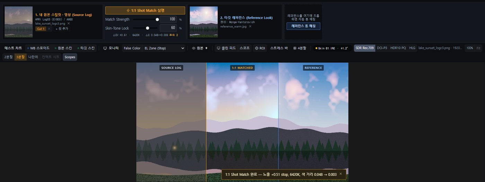
참고 사진 한 장에 색을 맞춥니다
닮고 싶은 장면의 스틸을 올리고 1:1 Shot Match 를 누르면 노출, 색온도, 색 기울기를 계산해 그레이드에 바로 넣습니다. 피부색은 지키면서 맞춥니다.
설치형에서 쓸 수 있습니다.

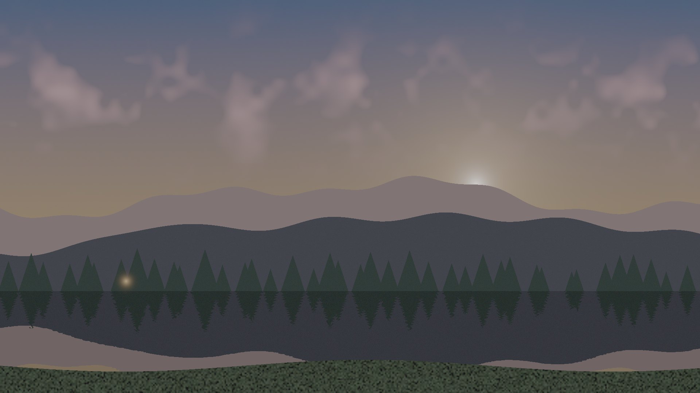
섀도는 청록, 하이라이트·피부는 주황. 상업 영화의 대표적인 색 대비
가운데 선을 끌거나 방향키로 움직여 보세요. 예제 장면은 컴퓨터로 그린 풍경을 ARRI LogC3 로 인코딩한 것이고, 오른쪽은 CineMaster 엔진이 그 Log 를 Rec.709 로 그레이딩한 실제 결과입니다.
한 번 만든 룩을 같은 수식으로 여러 파일에 담습니다. 현장 모니터, DaVinci Resolve, 납품처에서 같은 색이 나옵니다.
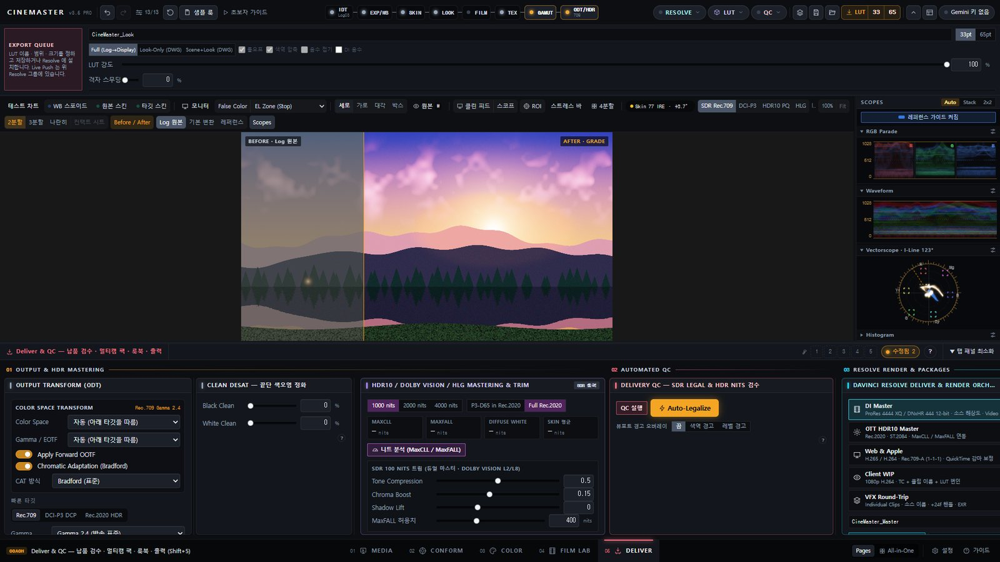
| .cube LUT | 33 또는 65 크기. Log에서 화면까지 한 번에(Full), 또는 CST 사이에 넣는 Look-Only로 저장합니다. |
|---|---|
| DCTL | LUT에 담을 수 없는 샤픈, 그레인, 할레이션을 Resolve에서 그대로 겁니다. |
| Resolve 노드 패키지 | 노드마다 LUT과 매트, 노드 트리를 만드는 스크립트를 함께 묶습니다. |
| Resolve 라이브 연동 | Resolve 컬러 페이지에서 고른 클립을 따라와 룩을 만들고, 출품 규격을 검사한 뒤 그 클립의 노드 하나에만 LUT으로 보냅니다. |
| HDR 납품 | HDR10과 SDR 트림 듀얼 마스터, MaxCLL · MaxFALL, Dolby Vision XML. |
| grading_state.json | 룩 설정 전체. 나중에 다시 열어 고칩니다. |
위 첫 화면의 Teal & Orange 룩을 실제로 저장한 Teal_Orange_Full_LogC3_to_Rec709_33pt.cube 의 앞부분입니다.
# Created by CineMaster AI # Pipeline Mode: FULL_LOG_TO_DISPLAY # Expected Input Color Space / Gamma: ARRI LogC3 (EI800) / AWG3 (camera log, full range) # Expected Output Color Space / Gamma: Rec.709 / Gamma 2.4 # Baked stages: 01 IDT, 02 Exposure/WB/Flare, 03 Skin Lock, 04 Look, 06 ODT # Bypassed stages: none (05 Texture is spatial and never part of a LUT) # working space: DaVinci Wide Gamut / Intermediate # schema_version: 3.0 # exposure_ev: +0.000 TITLE "Teal_Orange Full_LogC3_to_Rec709 33pt" LUT_3D_SIZE 33 DOMAIN_MIN 0.0 0.0 0.0 DOMAIN_MAX 1.0 1.0 1.0 0.000000 0.000000 0.000000 0.000000 0.000000 0.000000 0.053933 0.000000 0.000000 …
프로그램 아래쪽 독의 다섯 페이지를 왼쪽부터 차례로 지나면 됩니다. 이름을 누르면 그 페이지의 실제 화면이 나옵니다.
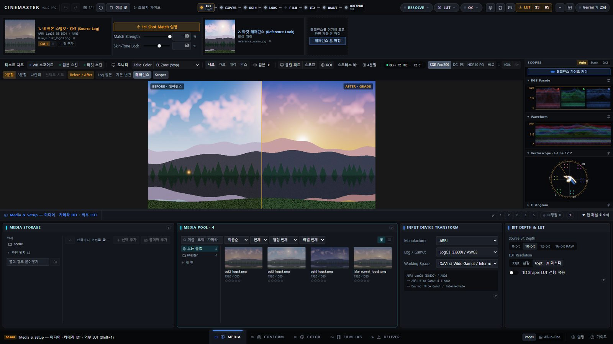
원본 Log 스틸이나 영상을 불러오고 카메라와 Log 종류를 고릅니다. 미디어 풀에 모아 둔 클립을 바로 꺼내 쓸 수 있습니다.
아래 화면은 모두 실제 프로그램을 찍은 것입니다.

닮고 싶은 장면의 스틸을 올리고 1:1 Shot Match 를 누르면 노출, 색온도, 색 기울기를 계산해 그레이드에 바로 넣습니다. 피부색은 지키면서 맞춥니다.
설치형에서 쓸 수 있습니다.
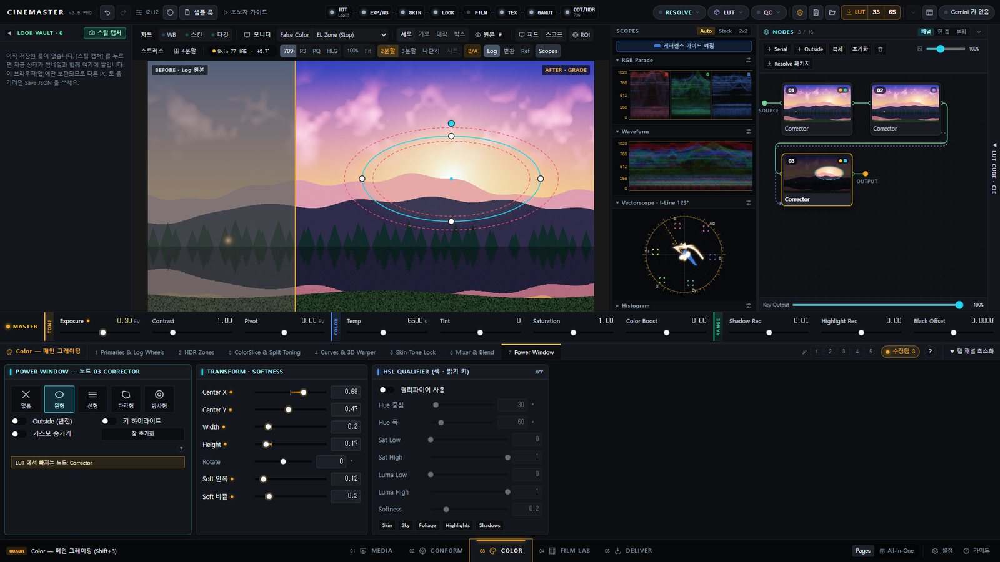
보정을 노드에 나눠 담아 하나씩 끄고 켜며 비교합니다. 원형 · 선형 · 다각형 Power Window 와 HSL Qualifier 로 하늘이나 얼굴만 따로 고칩니다.
단축키는 DaVinci Resolve 와 같습니다. Alt + S 노드 추가, Ctrl + D 끄고 켜기.
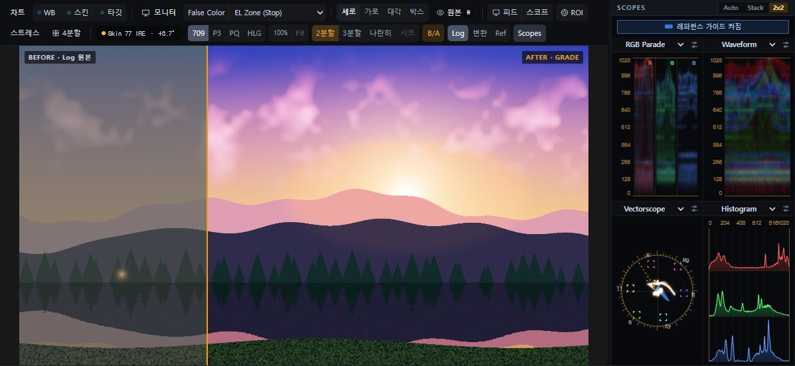
RGB Parade, Waveform, Vectorscope, Histogram 을 10비트 눈금으로 봅니다. 벡터스코프의 I-Line 으로 피부색이 제자리에 있는지 바로 알 수 있고, 스코프만 다른 모니터에 띄울 수도 있습니다.
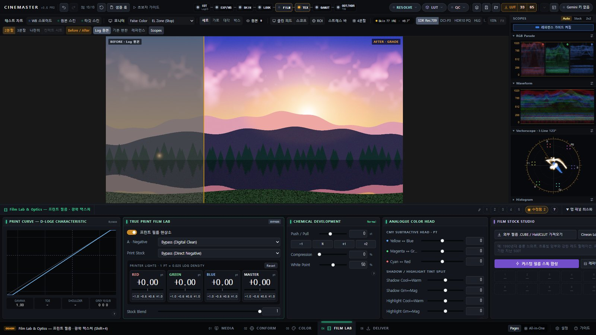
네거티브 10종과 프린트 6종을 고르고, 증감 현상과 프린터 라이트로 농도와 색을 맞춥니다. 갖고 있는 필름 LUT 을 불러와 나만의 스톡으로 저장할 수도 있습니다.
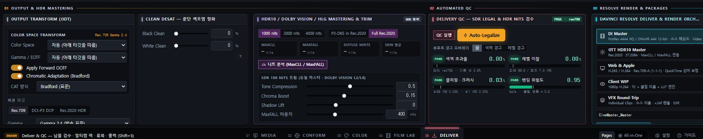
색역 초과, 레벨 이탈, 클리핑, 밴딩 위험을 검사하고, 기준을 넘는 부분은 Auto-Legalize 로 안전한 LUT 을 따로 만듭니다.
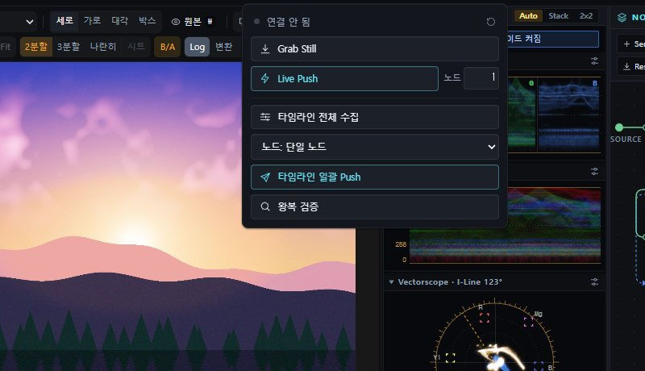
Resolve 의 현재 프레임을 가져오고, 만든 LUT 을 지금 클립이나 타임라인 전체에 바로 겁니다. 왕복 검증은 두 프로그램의 결과를 픽셀 단위로 비교해 차이를 보여 줍니다.
설치형과 DaVinci Resolve Studio 가 필요합니다.
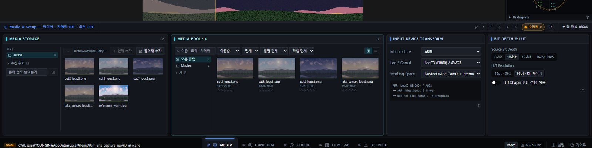
PC 드라이브와 클라우드 폴더를 썸네일로 둘러보고, 쓸 클립을 풀에 넣어 별점과 색 라벨로 정리합니다. 파일은 복사하지 않고 경로로 연결하며, 옮긴 파일은 다시 연결할 수 있습니다.
모든 기능을 쓰려면 설치형을, 먼저 둘러보려면 웹 버전을 여세요. 지금 버전은 v3.7.1(2026년 11월 19일)입니다.
| 항목 | 설치형 | 포터블 zip | 웹 버전 |
|---|---|---|---|
| 설치 | 설치 마법사, 바탕화면 아이콘 | 압축만 풀면 실행 | 없음, 브라우저에서 열기 |
| 색보정 · 노드 · 스코프 · LUT 저장 | 됩니다 | 됩니다 | 됩니다 |
| Shot Match · 레퍼런스 톤 매칭 | 됩니다 | 됩니다 | 안 됩니다 |
| Resolve 연결 · 노드 패키지 · HDR 납품 | 됩니다 | 됩니다 | 안 됩니다 |
| 미디어 풀 · Gemini AI 분석 | 됩니다 | 됩니다 | 안 됩니다 |
| 새 버전 알림 | 됩니다 | 됩니다 | 새로고침하면 최신 |
CineMaster_AI_Setup_v3.7.1.exe 을 내려받습니다.새 버전은 새 설치 파일을 그대로 실행하면 덮어 설치됩니다. 만든 룩과 설정은 그대로 남습니다.
CineMaster AI 설치 파일에는 아직 코드 서명 인증서가 없어서, 처음 실행할 때 Windows SmartScreen 이 파란 창을 띄웁니다. 아래 순서로 실행하세요.
받은 파일이 이 페이지의 파일과 같은지 확인하려면 PowerShell 에서 Get-FileHash 파일이름 을 실행해 아래 SHA-256 과 비교하세요.
설치 없이 이 페이지 안에서 바로 열립니다. 사진과 영상은 내 브라우저 안에서만 처리되고 어디에도 올라가지 않습니다.
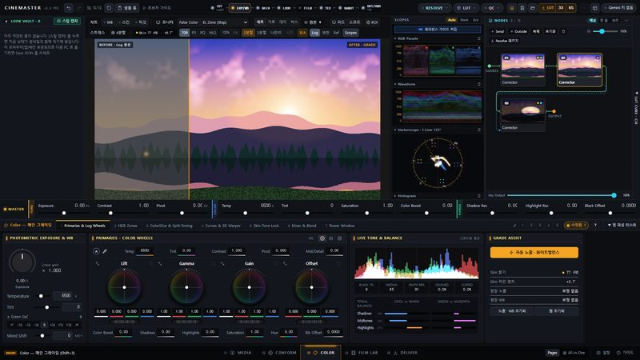
웹 버전은 서버 없이 브라우저만으로 돌아가는 Standalone 모드입니다. 색보정, 노드, Power Window, 스코프, .cube 저장은 설치형과 같은 수식으로 동작합니다. Shot Match, Resolve 연결, 미디어 풀, HDR 납품처럼 PC 쪽 프로그램이 계산하는 기능은 설치형에서 쓰세요.
PC 화면 기준으로 만들었습니다. 휴대폰에서는 권장하지 않습니다. 인터넷 없이 쓰려면 웹 버전 zip, 751 KB 을 받아 압축을 풀고 index.html 을 여세요.
네. 이 페이지의 설치 파일, 포터블 zip, 웹 버전은 모두 무료로 받아 쓸 수 있습니다.
색보정과 LUT 저장은 같은 수식이라 결과가 같습니다. Shot Match, Resolve 연결, 미디어 풀, HDR 납품처럼 PC 쪽 프로그램이 계산하는 기능은 설치형에만 있습니다. 위의 비교표를 참고하세요.
아니요. 웹 버전은 내 브라우저 안에서, 설치형은 내 PC 안에서만 처리합니다. Gemini AI 분석을 직접 켰을 때만 분석할 스틸 한 장이 구글 서버로 전송됩니다.
설치형은 시작할 때 이 홈페이지의 최신 버전을 확인해, 새 버전이 있으면 화면에 알림과 내려받기 링크를 보여 줍니다. 자동으로 설치하지는 않습니다. 환경설정의 인터페이스 항목에서 끌 수 있고, 인터넷이 없으면 조용히 넘어갑니다.
웹 버전은 Mac 의 Chrome 에서 열립니다. 설치형은 지금은 Windows 용만 배포합니다.
Resolve 의 Project Settings → Color Management 에서 3D lookup table interpolation 을 Tetrahedral 로 바꿔 주세요. Full LUT 뒤에 CST 를 또 걸지 않았는지도 확인하세요. 설명서 Resolve 장에 그림으로 정리해 두었습니다.
코드 서명 인증서가 없는 새 프로그램이라 나오는 경고입니다. 위의 "Windows의 PC 보호" 안내대로 실행하고, 걱정되면 파일 정보의 SHA-256 으로 받은 파일이 같은지 확인하세요.
버그, 사용법, 기능 제안은 메일로 보내 주세요. 쓰고 계신 버전(화면 왼쪽 위)과 무엇을 하다가 생겼는지 함께 적어 주시면 빨리 확인할 수 있습니다.